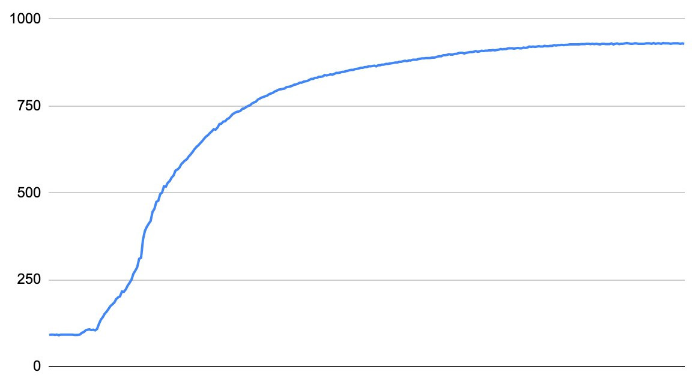

rust_code problemI have long been interested in how to find the optimal parameters to approximate experimental data. I have created many projects with the goal of optimizing parameters automatically, and with my latest version, aptly named Omega Optimizer, I feel like I finally have something that works. In this blogpost I want to explain what parameter optimization is, how you can do it numerically, and how my Omega Optimizer works.
So, if we are optimizing parameters, a good question is, what is a parameter? Let us look at the function
So, why do we want to optimize parameters? Many times, when doing experimental physics, you know which function describes what you are measuring, but want to find the parameters. For instance, Ohm's law says
and want to find
where
The problem is then non-linear regression. What if your parameters are in another function, like
In this blogpost I want to use a real-world example to show how a parameter optimizer could be useful. One day my brother sent me this image:
 along with the question "What function is this, and how do I linearize it?"
These two questions are linked, if I can find a function
I therefore hypothesized that the data could be described by the function
This is a non-linear regression problem! When I solved this problem for my brother initially, I used my then newly developed parameter optimizer, but it could not find the optimal parameters, so I found them manually instead. This was a big part of my motivation for this new parameter optimizer, to make sure it worked I tested it on this function, and it gave better parameters than I found manually.
So, how do you solve optimization problems numerically? If you have ever had a linear algebra course, you probably know that the gradient of a function points in the direction of steepest ascent. Conversely, the negative of the gradient points in the direction of steepest descent. We can use this to find the minimum of a function; if we calculate the gradient at a point, we can follow the negative of the gradient to find a new point, which will have a lower function value. Repeat this enough times, and you will reach the minimum. This algorithm is called gradient descent.
More precisely, if you have a multivariable function
There are many ways of finding
This works, but it is quite slow. It uses few steps, but each step takes a lot of time.
The thing about
While gradient descent works, it does not converge to the minima particularly quickly. There is another method that converges incredibly quickly, but it has a few caveats.
You might have seen Newton's method for finding the zeros of a function. The sequence
will converge to a
to find extrema. This finds the minimum if
Newton's method also works for multivariable functions. If we substitute the gradient for the derivative, and the hessian for the double derivative, we get the sequence
To recap, if you have a multivariable function
and the hessian is
This obviously extends to more variables.
There are two main downsides to Newton's method. The first is the hessian, if you have many variables, the hessian is going to be quite large, and finding the inverse is computationally expensive. Finding the inverse of a
Gradient descent is a robust algorithm, it will typically converge to a minimum even if your initial value is far away, but it converges to the minimum slowly. Newton's method is not robust, if your initial value is far away from the minimum it might diverge or act erratically, but if it does converge, it does so rather quickly. The logical thing to do is then to use both methods. You can start with a few steps with gradient descent to come close enough to the minimum for Newton's method to work. You can then use Newton's method on the result of the gradient descent to quickly reach the minimum value.
Both gradient descent and Newton's method will find a minimum, but not necessarily the global minimum. To avoid local minima, you can add "weight" to your gradient descent. One such modification is called "Nesterov accelerated gradient descent":
Where
I have not seen the need to add weight to my parameter optimizer, the way I chose to avoid local minima is to start with an initial value close enough to the global minimum. For parameter optimization, we can use the fact that it is easy to visually see if the parameters are correct or not, so you can manually change parameter values manually until you have something that looks somewhat correct, and then use the parameter optimizer to find the true minimum.
I have now written a lot about general multivariable functions, but how will this help us with parameter optimization? Which function do we want to find the minimum of? Here we need to specify what we actually want to do.
We have experimentally measured some data, we have measured a set of results
This is almost our error function, but there is one problem, we want to differentiate the error function, but the absolute value function is not nice to differentiate. We therefore want to square the difference instead:
This is our error function, the function we want to minimize. Note that this is not the same function as
To use gradient descent and Newton's method, we need to find both
We can then find the hessian:
Now we have everything we need to create a program that optimizes parameters.
The parameter optimizer needs both your data and the parameterized function you think describes the data. The Omega Optimizer reads data where the first line is your function defined with a combination of math and python syntax. The next line is either the start of space separated x-y pairs, or an optional line for parameter values you know the approximate value for. For our example function, the datafile would look like this:
f(x; a, b, c, n) = a*x**n/(b*x**n + 1) + c
c=90
1 92
2 97
..
265 928
266 929
Here we have set c to
For parameters not initialized in the datafile, the Parameter Optimizer defaults to 1. For simple (and even some complicated) functions this is fine, but in some cases, you need to be closer to the optimal parameters. To solve this problem, I have made a simple GUI that shows how the function looks like with a specific set of parameters overlaid on top of your dataset, and input fields where you can change the parameter values to immediately see how that affects the function:

To use our optimization algorithms, we need both the gradient and the hessian of our function. The problem is that for complicated functions, the gradient and hessian are ugly, and it would be unreasonable to expect the user to symbolically calculate them both before using the program. For instance, with our example function
the gradient is
and the hessian is
So, if we do not want to do math by hand, what do we do? We get the computer to do it for us! The python package sympy can do symbolic math automatically using magic, magic so complicated that no comparable programs exist for other programing languages. The problem with this is that python is slow, so while we need to use sympy to differentiate our function, we do not want to use python to do the actual parameter optimization. I would typically use c++ for fast computation, but I want to learn rust, so Omega Optimizer is written in rust. Luckily, sympy can turn your symbolic expression into rust code, with a little caveat, so we can use sympy for symbolic calculation, turn our symbolic expression into rust code, compile the rust program, and then finally run the actual parameter optimization. This does add a lot of preprocessing, but the nice thing is that only needs to be done once, so if you want to try with many different initial parameters, that does not add any computation time.
It is finally time to test the Omega Optimizer. If we run it on our example problem without finding initial parameters, this is what we get:

This is a straight line is a typical local minimum, so this is not an unexpected result. The error here is obviously large, the relative error (sum of squared differences divided by number of datapoints) is 58973.4. In this case you can visually see that we did not get the optimal initial parameters, another tell is that Newton's method acted up, instead of decreasing the error, it increased it massively, probably searching for a maximum that does not exist.
To find the optimal parameters, we need better initial values, and luckily, I already found a good set when helping my brother. The initial parameters I found then were
(a, b, c, n) = (0.09, 0.0001063, 98, 2.32)
but even with these parameters we get no improvement:

Here it is harder to tell that we have not reached the minimum, but Newton's method did not want to play nice here either, it was again looking for a non-existent maximum. It seems like the parameters I found were another local minimum, and we get the relative error 343.4 Everything is not hopeless however, if we go back to the parameter GUI and find some new initial parameters:
(a, b, c, n) = (0.26, 0.0003, 95, 2)
Newton's method finaly acts nice, and we get:

This does not look like a big improvement, but the relative error is now 140.5, that means that this set of parameters is actually more than twice as good as the previous set, and I could finally give my brother a proper answer to his question: the optimal parameters for linearizing his data is
(a, b, c, n) = (0.285, 0.000331, 80.4, 2.07)
As you might tell by the example I used, Parameter Optimizer can be a bit finnicky to use. As I said, that is an exceptionally difficult problem to solve, but still. It is understandable that the program does not work when we have not set any initial parameters, but it really should have worked with the first set of initial parameters. So, how do we fix that? I do not know. The program is written in Rust, so it is fast. This means that I can run the descent algorithm many times in a row. The goal is then to figure out a way of approaching a good set of initial parameters using a random walk or a similar algorithm.
For now though, I have achieved what I set out to do. I finally found the true initial parameters for the problem my brother sent me many months ago. He was happy with the parameters I found manually of course, they were good enough for his use case, but the fact that I could not find the true optimal parameters was bothering me. Parameter Optimizer is also a useful tool to have in the future, if I ever get another parameter optimization problem I must solve, I have the means to do so quickly.
If you want to look at the source code for Parameter Optimizer, it is available at my github.
rust_code problemWhile the sympy function sympy.printing.rust.rust_code almost does what we want, it has a small but fatal flaw, it does not respect types. Rust is incredibly strict with it's types, it does not like to convert floats to ints or ints to floats. For a simple example we can imagine a program that differentiates a function and creates a rust function named df. If we use this program on
import sympy as sp
from sympy.printing.rust import rust_code
x = sp.symbols("x", float=True)
f = x**2
df = sp.diff(f, x)
print(f"""\
fn df(x: f64) -> f64 {{
return {rust_code(df)};
}}\
""")
this will create rust code
fn df(x: f64) -> f64 {
return 2*x;
}
however, this will give the error
return 2*x;
^ no implementation for {integer} * f64
So I had to create a function that added a _f64 to numbers where needed.